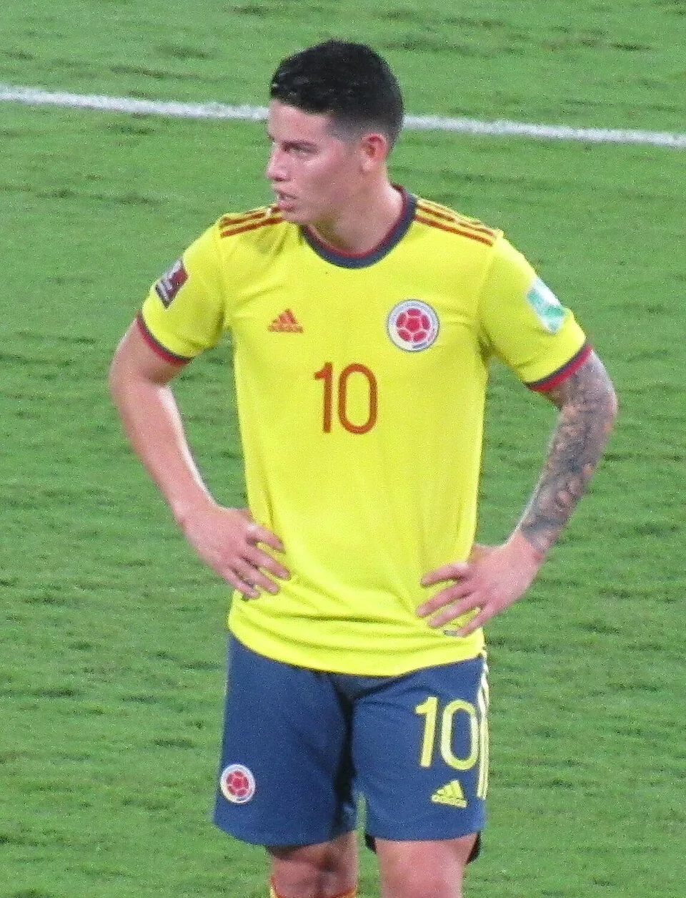

The profile
James Rodríguez
James Rodríguez was born in Cúcuta, Colombia, and began his professional career while still a teenager. His early progress at Envigado opened the way to a move abroad.
He made his name at Porto and Monaco before moving to Real Madrid, with later spells including Bayern Munich. A left-footed attacking midfielder, he looks for pockets of space from which to shoot or play a final pass. His first touch and vision allow him to turn quickly toward goal.
James became the centre of Colombia's 2014 World Cup attack. He scored in every match the team played, including twice against Uruguay in the round of 16, and finished as the tournament's leading scorer with six goals. Colombia reached the quarter-finals for the first time before losing to Brazil; his goals and creativity made that run possible.
2014Brazil
Quarter-finals
Group C Colombia3 : 0Greece
- Pablo ARMERO5′
- Teofilo GUTIERREZ57′
- James RODRIGUEZ90+2′
Colombiahome
Starting lineup
- David OSPINA
- Cristian ZAPATA
- Mario YEPES
- Pablo ARMERO
- Juan ZUNIGA
- Carlos SANCHEZ
- Abel AGUILAR
- James RODRIGUEZ
- Juan CUADRADO
- Teofilo GUTIERREZ
- Victor IBARBO
Substitutions
- 68′Alexander MEJIA on · Abel AGUILAR off
- 73′Santiago ARIAS on · Pablo ARMERO off
- 75′Jackson MARTINEZ on · Teofilo GUTIERREZ off
Greeceaway
Starting lineup
- Orestis KARNEZIS
- Konstantinos Manolas
- Vasileios TOROSIDIS
- Sokratis Papastathopoulos
- Jose CHOLEVAS
- Ioannis MANIATIS
- Panagiotis KONE
- Konstantinos KATSOURANIS
- Georgios SAMARAS
- Dimitrios SALPINGIDIS
- Theofanis GEKAS
Substitutions
- 56′Ioannis Fetfazidis on · Dimitrios SALPINGIDIS off
- 63′Konstantinos Mitroglou on · Theofanis GEKAS off
- 77′Georgios KARAGOUNIS on · Panagiotis KONE off
Group C Colombia2 : 1Ivory Coast
- James RODRIGUEZ63′
- Juan QUINTERO69′
- GERVINHO72′
Colombiahome
Starting lineup
- David OSPINA
- Cristian ZAPATA
- Mario YEPES
- Pablo ARMERO
- Juan ZUNIGA
- Carlos SANCHEZ
- Abel AGUILAR
- James RODRIGUEZ
- Juan CUADRADO
- Teofilo GUTIERREZ
- Victor IBARBO
Substitutions
- 52′Juan QUINTERO on · Victor IBARBO off
- 71′Santiago ARIAS on · Pablo ARMERO off
- 78′Alexander MEJIA on · Abel AGUILAR off
Ivory Coastaway
Starting lineup
- Boubacar BARRY
- Arthur BOKA
- Didier ZOKORA
- Serge AURIER
- Souleymane Bamba
- Cheick TIOTÉ
- Max GRADEL
- Yaya TOURE
- Serey DIE
- GERVINHO
- Wilfried BONY
Substitutions
- 59′Didier DROGBA on · Wilfried BONY off
- 66′Salomon KALOU on · Max GRADEL off
- 72′Mathis BOLLY on · Serey DIE off
Group C Japan1 : 4Colombia
- Shinji OKAZAKI45′
- Juan CUADRADO16′ · pen.
- Jackson MARTINEZ54′
- Jackson MARTINEZ81′
- James RODRIGUEZ89′
Japanhome
Starting lineup
- Eiji Kawashima
- Atsuto UCHIDA
- Yuto Nagatomo
- Yasuyuki KONNO
- Maya Yoshida
- Toshihiro Aoyama
- Makoto Hasebe
- Keisuke HONDA
- Shinji OKAZAKI
- Shinji KAGAWA
- Yoshito OKUBO
Substitutions
- 61′Hotaru Yamaguchi on · Toshihiro Aoyama off
- 68′Yoichiro Kakitani on · Shinji OKAZAKI off
- 84′Hiroshi Kiyotake on · Shinji KAGAWA off
Colombiaaway
Starting lineup
- David OSPINA
- Santiago ARIAS
- Pablo ARMERO
- Eder BALANTA
- Carlos VALDES
- Juan CUADRADO
- Fredy GUARIN
- Alexander MEJIA
- Juan QUINTERO
- Adrian RAMOS
- Jackson MARTINEZ
Substitutions
- 45′Carlos CARBONERO on · Juan CUADRADO off
- 45′James RODRIGUEZ on · Juan QUINTERO off
- 84′Faryd MONDRAGON on · David OSPINA off
Round of 16 Colombia2 : 0Uruguay
- James RODRIGUEZ27′
- James RODRIGUEZ49′
Colombiahome
Starting lineup
- David OSPINA
- Cristian ZAPATA
- Mario YEPES
- Pablo ARMERO
- Juan ZUNIGA
- Carlos SANCHEZ
- Abel AGUILAR
- James RODRIGUEZ
- Juan CUADRADO
- Teofilo GUTIERREZ
- Jackson MARTINEZ
Substitutions
- 67′Alexander MEJIA on · Teofilo GUTIERREZ off
- 80′Fredy GUARIN on · Juan CUADRADO off
- 84′Adrian RAMOS on · James RODRIGUEZ off
Uruguayaway
Starting lineup
- Fernando MUSLERA
- Diego GODIN
- Jose GIMENEZ
- Maximiliano PEREIRA
- Martin CACERES
- Alvaro PEREIRA
- Cristian RODRIGUEZ
- Egidio AREVALO
- Alvaro GONZALEZ
- Diego FORLAN
- Edinson CAVANI
Substitutions
- 52′Cristhian STUANI on · Diego FORLAN off
- 52′Gaston RAMIREZ on · Alvaro PEREIRA off
- 66′Abel HERNANDEZ on · Alvaro GONZALEZ off
Quarterfinal Brazil2 : 1Colombia
- THIAGO SILVA6′
- DAVID LUIZ68′
- James RODRIGUEZ79′ · pen.
Brazilhome
Starting lineup
- JULIO CESAR
- THIAGO SILVA
- DAVID LUIZ
- MARCELO
- MAICON
- FERNANDINHO
- PAULINHO
- OSCAR
- HULK
- Fred
- NEYMAR
Substitutions
- 82′RAMIRES on · HULK off
- 85′HERNANES on · PAULINHO off
- 87′HENRIQUE on · NEYMAR off
Colombiaaway
Starting lineup
- David OSPINA
- Cristian ZAPATA
- Mario YEPES
- Pablo ARMERO
- Juan ZUNIGA
- Carlos SANCHEZ
- James RODRIGUEZ
- Juan CUADRADO
- Fredy GUARIN
- Teofilo GUTIERREZ
- Victor IBARBO
Substitutions
- 45′Adrian RAMOS on · Victor IBARBO off
- 69′Carlos BACCA on · Teofilo GUTIERREZ off
- 79′Juan QUINTERO on · Juan CUADRADO off
2018Russia
Round of 16
Group H Colombia1 : 2Japan
- Juan QUINTERO39′
- Shinji KAGAWA6′ · pen.
- Yuya OSAKO73′
Colombiahome
Starting lineup
- David OSPINA
- Oscar MURILLO
- Santiago ARIAS
- Johan MOJICA
- Davinson SANCHEZ
- Carlos SANCHEZ
- Juan CUADRADO
- Jefferson LERMA
- Juan QUINTERO
- Jose IZQUIERDO
- Radamel FALCAO
Substitutions
- 31′Wilmar BARRIOS on · Juan CUADRADO off
- 59′James RODRIGUEZ on · Juan QUINTERO off
- 70′Carlos BACCA on · Jose IZQUIERDO off
Japanaway
Starting lineup
- Eiji KAWASHIMA
- Gen SHOJI
- Yuto NAGATOMO
- Hiroki SAKAI
- Maya YOSHIDA
- Gaku SHIBASAKI
- Genki HARAGUCHI
- Shinji KAGAWA
- Takashi INUI
- Makoto HASEBE
- Yuya OSAKO
Substitutions
- 70′Keisuke HONDA on · Shinji KAGAWA off
- 80′Hotaru YAMAGUCHI on · Gaku SHIBASAKI off
- 85′Shinji OKAZAKI on · Yuya OSAKO off
Group H Poland0 : 3Colombia
- Yerry MINA40′
- Radamel FALCAO70′
- Juan CUADRADO75′
Polandhome
Starting lineup
- Wojciech SZCZESNY
- Michal PAZDAN
- Jan BEDNAREK
- Lukasz PISZCZEK
- Jacek GORALSKI
- Grzegorz KRYCHOWIAK
- Maciej RYBUS
- Bartosz BERESZYNSKI
- Robert LEWANDOWSKI
- Piotr ZIELINSKI
- Dawid KOWNACKI
Substitutions
- 57′Kamil GROSICKI on · Dawid KOWNACKI off
- 72′Lukasz TEODORCZYK on · Bartosz BERESZYNSKI off
- 80′Kamil GLIK on · Michal PAZDAN off
Colombiaaway
Starting lineup
- David OSPINA
- Santiago ARIAS
- Yerry MINA
- Johan MOJICA
- Davinson SANCHEZ
- Wilmar BARRIOS
- Abel AGUILAR
- James RODRIGUEZ
- Juan CUADRADO
- Juan QUINTERO
- Radamel FALCAO
Substitutions
- 32′Mateus URIBE on · Abel AGUILAR off
- 73′Jefferson LERMA on · Juan QUINTERO off
- 78′Carlos BACCA on · Radamel FALCAO off
Group H Senegal0 : 1Colombia
- Yerry MINA74′
Senegalhome
Starting lineup
- Khadim NDIAYE
- Kalidou KOULIBALY
- Salif SANE
- Youssouf SABALY
- Lamine GASSAMA
- Idrissa Gana GUEYE
- Cheikhou KOUYATE
- Ismaila SARR
- Keita BALDE
- Sadio MANE
- Mbaye NIANG
Substitutions
- 74′Moussa WAGUE on · Youssouf SABALY off
- 80′Moussa KONATE on · Keita BALDE off
- 86′Diafra SAKHO on · Mbaye NIANG off
Colombiaaway
Starting lineup
- David OSPINA
- Santiago ARIAS
- Yerry MINA
- Johan MOJICA
- Davinson SANCHEZ
- Carlos SANCHEZ
- James RODRIGUEZ
- Juan CUADRADO
- Mateus URIBE
- Juan QUINTERO
- Radamel FALCAO
Substitutions
- 31′Luis MURIEL on · James RODRIGUEZ off
- 83′Jefferson LERMA on · Mateus URIBE off
- 89′Miguel BORJA on · Radamel FALCAO off
2026Canada · Mexico · USA
Round of 16
Group K Uzbekistan1 : 3Colombia
- Abbosbek FAYZULLAEV60′
- Daniel MUNOZ40′
- Luis DIAZ65′
- Jaminton CAMPAZ90+9′
Uzbekistanhome
Starting lineup
- Utkir YUSUPOV
- Abdukodir KHUSANOV
- Rustam ASHURMATOV
- Sherzod NASRULLAEV
- Abdulla ABDULLAEV
- Behruzjon KARIMOV
- Akmal MOZGOVOY
- Otabek Shukurov
- Oston URUNOV
- Abbosbek FAYZULLAEV
- Eldor SHOMURODOV
Substitutions
- 46′Farrukh SAYFIEV on · Sherzod NASRULLAEV off
- 46′Dostonbek Khamdamov on · Oston URUNOV off
- 77′Azizbek AMONOV on · Abbosbek FAYZULLAEV off
- 77′Jakhongir UROZOV on · Rustam ASHURMATOV off
- 90+3′Igor Sergeev on · Eldor SHOMURODOV off
Colombiaaway
Starting lineup
- Camilo VARGAS
- Daniel MUNOZ
- Jhon LUCUMI
- Gustavo PUERTA
- Johan MOJICA
- Davinson SANCHEZ
- James RODRIGUEZ
- Jhon ARIAS
- Jefferson LERMA
- Luis DIAZ
- Luis SUAREZ
Substitutions
- 72′Jaminton CAMPAZ on · James RODRIGUEZ off
- 80′Cucho HERNANDEZ on · Luis SUAREZ off
- 80′Richard RIOS on · Gustavo PUERTA off
- 90+3′Andres GOMEZ on · Luis DIAZ off
- 90+3′Kevin CASTANO on · Jhon ARIAS off
Group K Colombia1 : 0DR Congo
- Daniel MUNOZ76′
Colombiahome
Starting lineup
- Camilo VARGAS
- Daniel MUNOZ
- Jhon LUCUMI
- Gustavo PUERTA
- Johan MOJICA
- Davinson SANCHEZ
- James RODRIGUEZ
- Jhon ARIAS
- Jefferson LERMA
- Luis DIAZ
- Luis SUAREZ
Substitutions
- 58′Jhon CORDOBA on · Luis SUAREZ off
- 58′Juan QUINTERO on · James RODRIGUEZ off
- 77′Richard RIOS on · Jhon ARIAS off
DR Congoaway
Starting lineup
- Lionel MPASI
- Aaron WAN-BISSAKA
- Steve KAPUADI
- Axel Tuanzebe
- Chancel MBEMBA
- Arthur MASUAKU
- Ngalayel MUKAU
- Samuel Moutoussamy
- Edo Kayembe
- Cedric BAKAMBU
- Yoane WISSA
Substitutions
- 46′Noah SADIKI on · Ngalayel MUKAU off
- 57′Simon BANZA on · Cedric BAKAMBU off
- 71′Charles PICKEL on · Edo Kayembe off
- 71′Joris KAYEMBE on · Arthur MASUAKU off
- 82′Nathanael MBUKU on · Samuel Moutoussamy off
Group K Colombia0 : 0Portugal
Colombiahome
Starting lineup
- Camilo VARGAS
- Jhon LUCUMI
- Santiago ARIAS
- Gustavo PUERTA
- Deiver MACHADO
- Davinson SANCHEZ
- James RODRIGUEZ
- Jhon ARIAS
- Jefferson LERMA
- Luis DIAZ
- Jhon CORDOBA
Substitutions
- 60′Richard RIOS on · Jefferson LERMA off
- 60′Luis SUAREZ on · Jhon CORDOBA off
- 76′Kevin CASTANO on · Jhon ARIAS off
- 76′Juan QUINTERO on · James RODRIGUEZ off
- 87′Daniel MUNOZ on · Santiago ARIAS off
Portugalaway
Starting lineup
- DIOGO COSTA
- RUBEN DIAS
- RENATO VEIGA
- JOAO CANCELO
- NUNO MENDES
- BRUNO FERNANDES
- RUBEN NEVES
- VITINHA
- CRISTIANO RONALDO
- JOAO FELIX
- PEDRO NETO
Substitutions
- 46′JOAO NEVES on · RUBEN NEVES off
- 46′DIOGO DALOT on · JOAO CANCELO off
- 70′SAMU COSTA on · VITINHA off
- 70′RAFAEL LEAO on · JOAO FELIX off
- 90+2′MATHEUS NUNES on · NUNO MENDES off
Round of 32 Colombia1 : 0Ghana
- Jhon ARIAS14′
Colombiahome
Starting lineup
- Camilo VARGAS
- Daniel MUNOZ
- Jhon LUCUMI
- Gustavo PUERTA
- Johan MOJICA
- Davinson SANCHEZ
- James RODRIGUEZ
- Jhon ARIAS
- Jefferson LERMA
- Luis DIAZ
- Jhon CORDOBA
Substitutions
- 8′Luis SUAREZ on · Jhon CORDOBA off
- 46′Richard RIOS on · James RODRIGUEZ off
- 72′Juan QUINTERO on · Jhon ARIAS off
- 90′Jaminton CAMPAZ on · Luis DIAZ off
Ghanaaway
Starting lineup
- Lawrence Ati ZIGI
- Gideon MENSAH
- Jerome OPOKU
- Derrick LUCKASSEN
- Marvin SENAYA
- Caleb YIRENKYI
- Thomas PARTEY
- Kwasi SIBO
- Antoine SEMENYO
- Jordan AYEW
- Inaki WILLIAMS
Substitutions
- 13′Alidu SEIDU on · Marvin SENAYA off
- 62′Elisha OWUSU on · Kwasi SIBO off
- 62′Abdul FATAWU on · Inaki WILLIAMS off
- 79′Ernest NUAMAH on · Jordan AYEW off
- 79′Prince ADU on · Caleb YIRENKYI off
Round of 16 Switzerland0 : 0Colombia
Switzerlandhome
Starting lineup
- Gregor KOBEL
- Nico ELVEDI
- Manuel AKANJI
- Ricardo RODRIGUEZ
- Denis ZAKARIA
- Remo FREULER
- Granit XHAKA
- Ardon JASHARI
- Fabian RIEDER
- Breel EMBOLO
- Dan NDOYE
Substitutions
- 46′Djibril SOW on · Ardon JASHARI off
- 71′Miro MUHEIM on · Ricardo RODRIGUEZ off
- 87′Cedric ITTEN on · Breel EMBOLO off
- 87′Silvan WIDMER on · Denis ZAKARIA off
- 90+1′Ruben VARGAS on · Dan NDOYE off
- 103′Zeki AMDOUNI on · Fabian RIEDER off
Colombiaaway
Starting lineup
- Camilo VARGAS
- Daniel MUNOZ
- Jhon LUCUMI
- Gustavo PUERTA
- Johan MOJICA
- Davinson SANCHEZ
- James RODRIGUEZ
- Jhon ARIAS
- Jefferson LERMA
- Luis DIAZ
- Luis SUAREZ
Substitutions
- 66′Juan QUINTERO on · James RODRIGUEZ off
- 66′Jaminton CAMPAZ on · Jhon ARIAS off
- 82′Richard RIOS on · Jefferson LERMA off
- 82′Cucho HERNANDEZ on · Luis SUAREZ off
- 118′Yerry MINA on · Jhon LUCUMI off